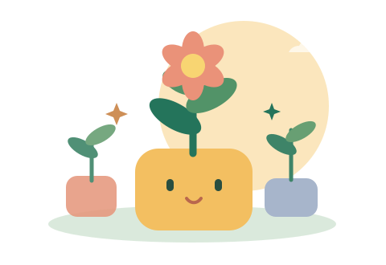

Have a go
Questions, diagrams and built-in hints help children take the next step. There is time to think.
A few thoughtful questions. A little discovery. Practice that grows with your child, one small step at a time.
English and Maths for Primary 1–6. Science from Primary 3.
Made for iPhone and iPad. The updated App Store release is being prepared.

Every different question earns a discovery star. Hints and mistakes are part of growing.
Choose a short practice, explore a topic, or revisit a tricky question. The app adjusts the challenge using each learner’s saved answers and hint use.
Questions, diagrams and built-in hints help children take the next step. There is time to think.
Read the standard explanation, ask why, and return to a question that needs another look.
Small quests and badges recognise exploration, help-seeking and returning to practice. All learning content remains available.
A clear record of what happened, where confidence is growing, and what could help next.
Reports are local and protected by a parent PIN. Older sessions may not have reliable active-time measurements. Reports describe observed practice; they do not establish that the app caused an improvement.
The current app has no account sign-up, advertising, third-party analytics or AI chat. Personalisation and reports work locally. A parent decides whether to share a report.
For support or older-account requests. Please do not send passwords, parent PINs or unnecessary information about a child.
Yes. Create up to five local learner profiles. Each profile has its own answers, practice history, garden and recommendations. Parents can select the learner when viewing a report.
No. The questions, diagrams, hints, explanations, learning recommendations and report calculations are included in the app. The current release does not make AI requests.
No. The current app contains no purchases, donations, paid plans or subscriptions. Learning features are free.
Open Progress → Parent Learning Report near the top, or You → For parents → Parent Learning Report. A grown-up verifies the device using Face ID, Touch ID or its passcode, then chooses a six-digit parent PIN. A device passcode is needed for setup and recovery. PDF sharing is optional.
Older versions did not reliably separate time in practice from time away from the app. New reports use recorded intervals when the practice screen is visible and the app is active. They can include idle moments on that screen.
There is no app-managed cloud sync. Data stays on the device and may be included in its backups, depending on device settings. A PDF is a readable report; it cannot restore learning records into the app.
Select the learner in You, choose Edit learner, and confirm “Delete this learner and their progress.” Other learner profiles remain. Earlier device backups are managed through device settings.
Earlier account-based test versions used AWS, including Cognito. Deleting a current local learner does not delete those older accounts or online records. Email help@northstareducation.io for an access or deletion request. See the legacy-account section of the privacy policy.